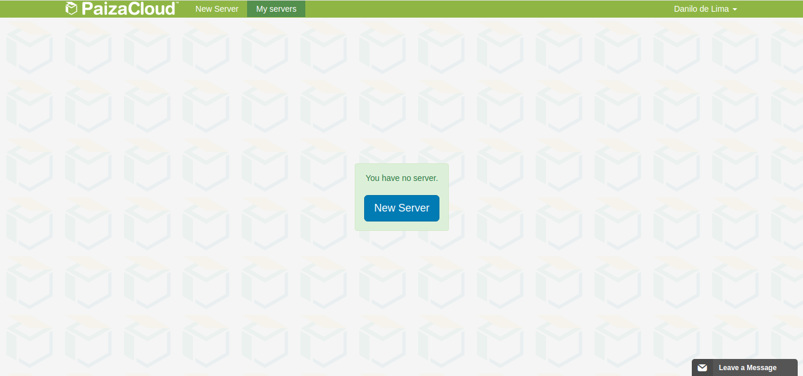
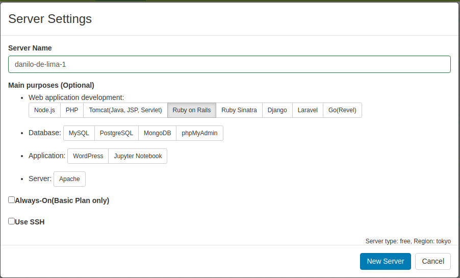
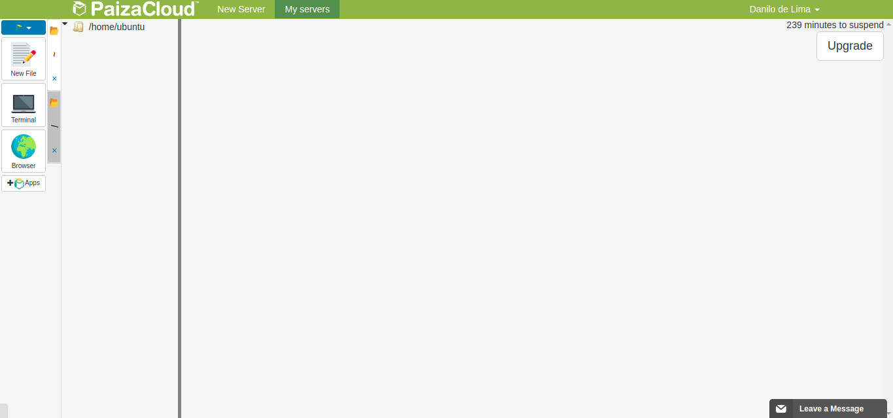
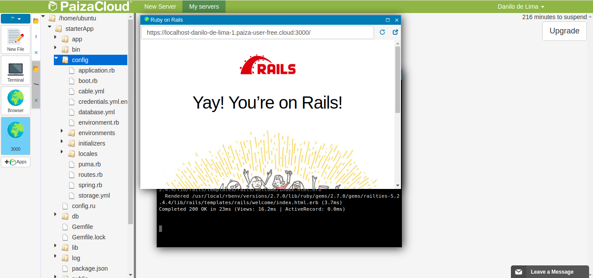

Como fazer o curso de Rails
Desenvolvedores costumam usar Linux porque é mais fácil de instalar ambientes de desenvolvimento nele. O Windows não é um sistema feito para programar, precisa fazer bastante coisa para as ferramentas funcionarem. O Ruby e o Rails não são fáceis de instalar, mas também não é fácil de instalar o Linux no computador e se for usar máquina virtual você precisar de um computador com uma boa quantidade de memória RAM.
A solução que eu dei para isso é usar um site na internet que oferece um ambiente de desenvolvimento dentro dele mesmo: o https://paiza.cloud/en/, precisa fazer cadastro, mas é de graça, só que um pouco limitado. Ele tem todos os elementos que você teria no seu computador, inclusive um navegador. Parece confuso, mas você vai ter um navegador dentro do navegador.
Vamos lá então, depois que criar a conta, você vai precisar criar um novo servidor:
Depois a única coisa que você precisa selecionar é o Ruby on Rails e criar o novo servidor:
Depois disso você vai ver sua área de trabalho:
No ícone do planeta você tem o navegador do próprio Paiza Cloud, mas ele só serve para conectar com o nosso servidor.
Temos também o terminal usado para acessar alguns comandos do Rails e do GIT. Esse terminal é uma ferramenta que só existe no Linux por isso fica tão complicado trazer para o Windows.
Por fim temos nosso editor de texto, podendo criar arquivos no "new file" e escrever neles. Essa coluna onde tem home/ubunutu está vazia porque ainda não temos nada no nosso servidor
Vamos começar com o Rails
No terminal eu quero que vocês clonem um projeto que está no meu Github, ele é um projeto Rails pronto para uso,
não precisa configurar mais nada, eu chamei de starterApp, mas poderia ser qualquer outra coisa. Clonem:
git clone https://github.com/danilolic/starterApp.git depois disso para entrar na pasta do projeto
via terminal digitem cd starterApp como eu fiz na imagem:
O Rails é um ferramenta para construir aplicações web e ele depende de várias bibliotecas que no mundo do Ruby nós
chamamos de gem, eu nunca descobri o motivo, mas pedras preciosas como Ruby ou Safira também são chamadas
de gemas, então gem é o nome em Inglês. Antes de tentar rodar qualquer coisa você precisa instalar essas
gems no servidor se não o Rails não funciona. Você pode
fazer isso com o comando bundle install. Vai aparecer uma lista bem grande das gems que o
Rails precisa e elas vão ser instaladas automaticamente, você só precisa esperar um pouco.
Depois disso vamos ligar nosso servidor com o comando rails server e para desligar o servidor basta
apertar control + c, mas lembre-se para ligar ou desligar você precisa estar na janela do terminal.
Quando o servidor estiver ligado vai aparecer um mundo com o número 3000 ali do lado, clica nele e você vai ver a mensagens de boas vindas do Rails. Pronto o seu servidor está ligado e funcionando:
OBS: Você pode maximizar as telas, daí vai ficar tudo em formato de abinhas e você vai trocando pelas abas
Dentro da pasta do Rails tem bastante coisa, mas vocês vão mexer principalmente na pasta app e dentro de config tem um arquivo chamado routes que é onde você escreve as urls. É por elas que o seu usuário vai saber qual página ele vai receber.
Agora que você tem um projeto Rails rodando você vai seguir esse tutorial aqui https://guiarails.com.br/getting_started.html do próprio site do Rails, ele vai te ensinar a criar um blog e como o foco é mais no back-end ele não coloca nenhum CSS no front-end, fica meio feio, mas se você quiser pode estilizar depois, primeiro é importante seguir o tutorial. Importante dizer no tutorial ele ensina a criar um projeto, mas eu já fiz isso, então não precisa repetir, mas é importante entender como é feito a criação do projeto. Você só vai precisar escrever código mesmo da seção 4 para frente.
É isso, qualquer dúvida só chamar. Para quem não entender o GIF, a tradução de Rails é trilhos